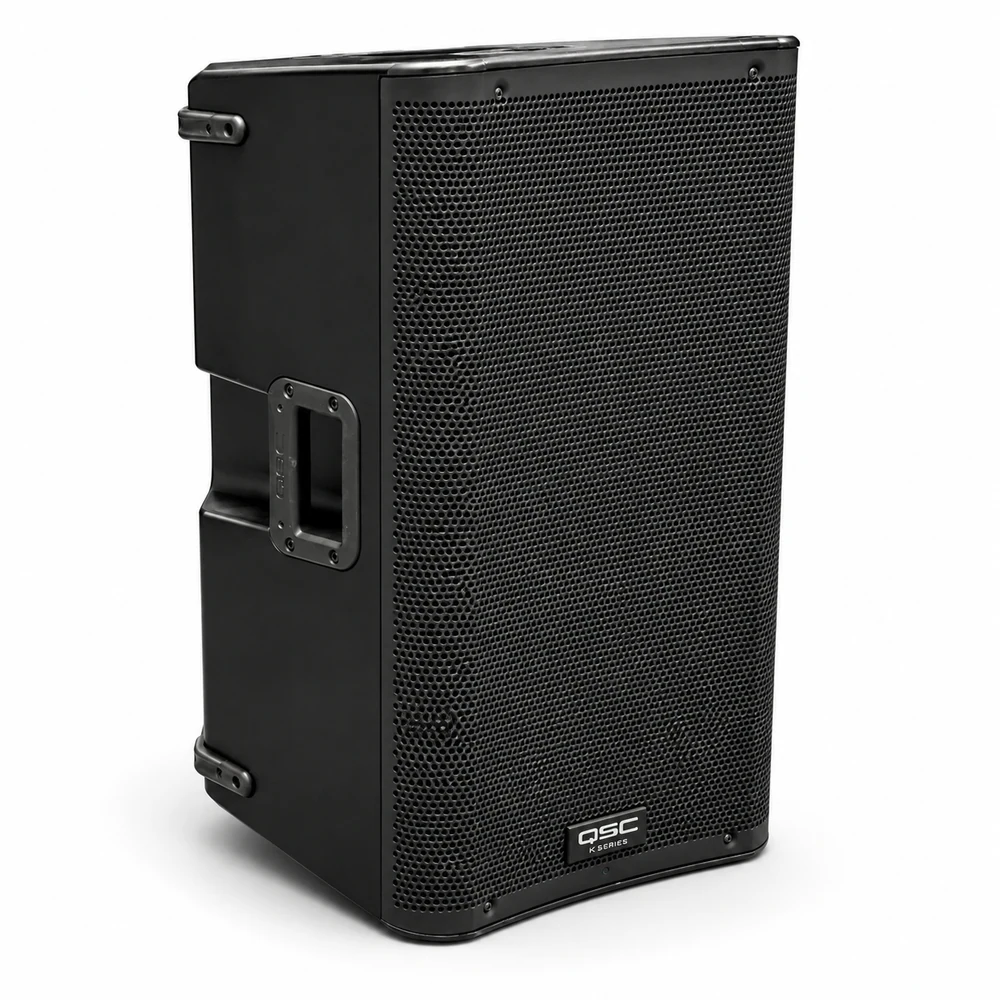

Weddings & receptions
Create a polished, event-ready setup with the QSC K12 Top Speaker integrated into the venue plan.
Professional Event Audio · Miami & South Florida
Single QSC K12 powered top speaker rental for clean event sound. Great for smaller events, speeches, cocktail areas, or building a larger sound setup. Includes setup and breakdown.

Rental Details
Room size, guest count, indoor or outdoor placement, power access and program style all affect the right audio configuration. Heat District Productions coordinates the rental with your event schedule, venue requirements and any compatible production elements in the build.
Popular Uses
Create a polished, event-ready setup with the QSC K12 Top Speaker integrated into the venue plan.
Coordinate placement, timing and supporting production around the needs of the event.
Build a complete experience instead of treating each rental as an isolated piece.
Frequently Asked Questions
Single QSC K12 powered top speaker rental for clean event sound. Great for smaller events, speeches, cocktail areas, or building a larger sound setup. Includes setup and breakdown. Single QSC K12 top speaker · setup included
Current website pricing is $115 event base · +$20/hr after 5 hours. Final pricing depends on the selected duration or option, quantity, venue access and any travel outside our standard four-county service area.
Room size, guest count, indoor or outdoor placement, power access and program style all affect the right audio configuration.
Yes. It can be included in a custom build with compatible sound, lighting, DJ, visual, furniture or guest-experience services.
Related Rentals
Heat District Productions
Share your date, venue, guest count and event goals. We will confirm availability and make sure the rental fits the full production plan.